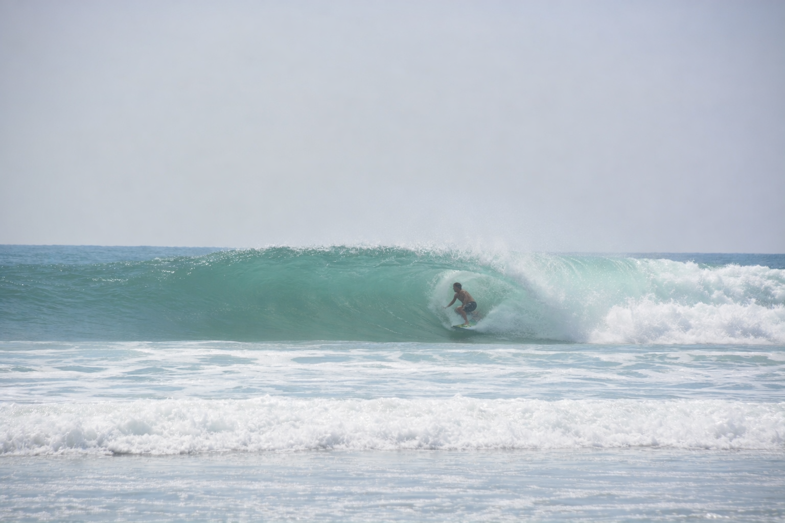
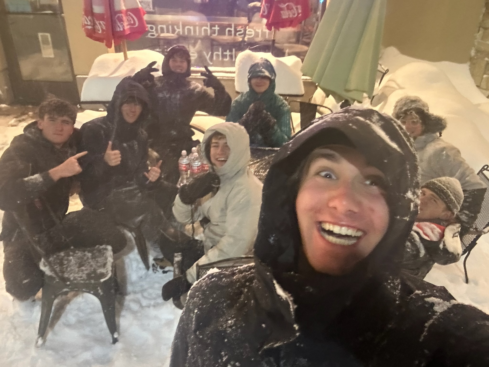
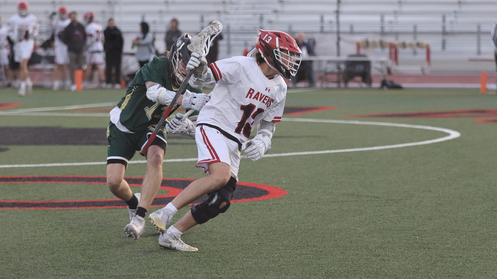

Surfing at Del Mar is one of my favorite pastimes and is what I do all summer. Early mornings and late sunsets at the beach with the sun just coming up over the water are some of my favorite moments of the week. I usually go out with the big dawg, Owen Ruff, who is always down to send some big waves. We spend hours out in the lineup, waiting for the perfect set and joking around between waves. Surfing teaches important life lessons like patience, balance, and perseverance. It's more than just a fun activity for me; it's something I'm fairly passionate about and plan to do my whole life.
Del Mar Surf Report.
My friend group, the Six Dreamrz, is a tight-knit crew that's been together since Middle School. Each member brings something unique to the table which is why we've stuck around so long. Roby is the group leader meaning he has to drive us to lunch and he has to host a lot of events at his house. Jake is more of a connections type of guy, he has his ties to ASB and other organizations which benefits all of us. Cash and Owen are the jesters of the group, always trying to find a way to make everyone laugh. Finally, Jackson is a voice of reason, he's the all knowing Dreamer and what he says goes.
Six Dreamrz Tiktok.
Lacrosse has been a huge part of my life, shaping both my discipline and teamwork skills. I love the intensity of the game, the strategy behind every play, and the rush of scoring a goal or making a crucial save. Being part of a team teaches me responsibility and how to work with others toward a common goal. Practices push me to improve physically and mentally, while games challenge my focus and decision-making under pressure. Beyond the sport itself, lacrosse has connected me with coaches and teammates who inspire me to always give my best. It's not just a game, it's a community, and a mindset.
CCA Lacrosse Maxpreps.